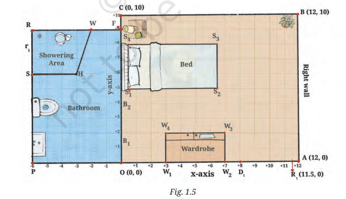

Exercise 1.2 Practice
00:00
Overview
This page provides comprehensive Ch 1: The Use of Coordinates - Exercise 1.2 Practice. Free NCERT Solutions for Class 9 Maths. Learn how to describe positions on a plane and calculate distances.
Coordinate Applications & Distance
Q1: Room & Bathroom Mapping
On a graph sheet, mark the $x$-axis and $y$-axis and the origin $O$. Mark points from $(-7, 0)$ to $(13, 0)$ on the $x$-axis and from $(0, -15)$ to $(0, 12)$ on the $y$-axis (using the scale $1\text{ cm} = 1\text{ unit}$). Using Fig. 1.5, answer the given questions:

-
Study Table Placement: Place Reiaan’s rectangular study table with three of its feet at the points $(8, 9)$, $(11, 9)$ and $(11, 7)$.
- Where will the fourth foot of the table be?
- Is this a good spot for the table?
- What is the width of the table? The length? Can you make out the height of the table?
- Bathroom Door Swing: If the bathroom door has a hinge at $B_1$ and opens into the bedroom, will it hit the wardrobe? Are there any changes you would suggest if the door is made wider?
-
Bathroom Features: Look at Reiaan’s bathroom.
- What are the coordinates of the four corners $O$, $F$, $R$, and $P$ of the bathroom?
- What is the shape of the showering area $\text{SHWR}$ in Reiaan’s bathroom? Write the coordinates of the four corners.
- Mark off a $3\text{ ft} \times 2\text{ ft}$ space for the washbasin and a $2\text{ ft} \times 3\text{ ft}$ space for the toilet. Write the coordinates of the corners of these spaces.
-
Other Rooms:
- Reiaan’s room door leads from the dining room which has the length $18\text{ ft}$ and width $15\text{ ft}$. The length of the dining room extends from point $P$ to point $A$. Sketch the dining room and mark the coordinates of its corners.
- Place a rectangular $5\text{ ft} \times 3\text{ ft}$ dining table precisely in the centre of the dining room. Write down the coordinates of the feet of the table.
1. Study Table Placement:
- (i) Fourth Foot: For a rectangular table with feet at $(8, 9)$, $(11, 9)$, and $(11, 7)$, the fourth foot must complete the rectangle. The $x$-coordinate must be $8$ and the $y$-coordinate must be $7$. So, the fourth foot is at $(8, 7)$.
- (ii) Suitability of Spot: Yes, this is a good spot for the table. It is situated in the top-right corner of the bedroom area, leaving ample open space in the middle of the room and not overlapping with other furniture like the bed or the wardrobe.
- (iii) Dimensions:
- Length = Horizontal distance between $x = 8$ and $x = 11$, which is $11 - 8 = 3$ units ($3\text{ ft}$).
- Width = Vertical distance between $y = 7$ and $y = 9$, which is $9 - 7 = 2$ units ($2\text{ ft}$).
- Height: We cannot make out the height of the table because Fig. 1.5 is a 2D floor plan view (top-down projection) which only represents the $x$ and $y$ coordinates, omitting the vertical $z$-axis (height).
2. Bathroom Door Swing:
- The bathroom door ends are at $B_1(0, 1.5)$ and $B_2(0, 4)$, meaning the door width is $4 - 1.5 = 2.5$ units.
- The door hinges at $B_1(0, 1.5)$ and swings into the bedroom. The wardrobe is bounded by $x$-coordinates $3$ to $7$ and $y$-coordinates $0$ to $2$. The nearest corner of the wardrobe is $W_4(3, 2)$.
- The distance from the hinge $B_1(0, 1.5)$ to the nearest wardrobe corner $W_4(3, 2)$ is: $$d = \sqrt{(3 - 0)^2 + (2 - 1.5)^2} = \sqrt{9 + 0.25} = \sqrt{9.25} \approx 3.04\text{ units}$$
- Since the door swing radius is only $2.5$ units, which is less than the distance of $3.04$ units to the wardrobe, the door will not hit the wardrobe.
- Wider Door Suggestions: If the door is made wider (for example, $3.5$ units to match the room door), the swing radius will exceed the distance to the wardrobe and collide with it. Suggestions:
- Install a sliding or pocket door.
- Make the door open inwards into the bathroom.
- Move the wardrobe slightly to the right (e.g., beginning at $x \ge 4$).
3. Bathroom Features:
- (i) Bathroom Corners: Looking at the coordinates and labels on the grid:
- $O = (0, 0)$
- $F = (0, 9)$
- $R = (-6, 9)$
- $P = (-6, 0)$
- (ii) Showering Area (SHWR): The corners of the showering area are $R(-6, 9)$, $W(-2, 9)$, $H(-3, 6)$, and $S(-6, 6)$.
- Since the upper and lower boundaries ($RW$ and $SH$) are horizontal line segments parallel to each other, but the right-hand boundary ($WH$) is slanted, the shape is a trapezium (trapezoid).
- (iii) Washbasin & Toilet:
- Washbasin ($3\text{ ft} \times 2\text{ ft}$): Placed in the bottom-left corner of the bathroom, starting at $P(-6, 0)$. Extending $2$ units along the $x$-axis (to $x = -4$) and $3$ units along the $y$-axis (to $y = 3$). The corners are: $(-6, 0)$, $(-4, 0)$, $(-4, 3)$, and $(-6, 3)$.
- Toilet ($2\text{ ft} \times 3\text{ ft}$): Placed next to the washbasin, extending from $y = 3$ to $y = 5$ ($2$ units) and $3$ units horizontally from the wall (to $x = -3$). The corners are: $(-6, 3)$, $(-3, 3)$, $(-3, 5)$, and $(-6, 5)$.
4. Other Rooms (Dining Room):
- (i) Dining Room Corners: The dining room is adjacent to the bedroom/bathroom. Its length extends from $P(-6, 0)$ to $A(12, 0)$ along the $x$-axis (length $= 12 - (-6) = 18\text{ ft}$). Since the width is $15\text{ ft}$, extending downwards (negative $y$-direction), the $y$-coordinates go from $0$ down to $-15$. The four corners are: $P(-6, 0)$, $A(12, 0)$, $(12, -15)$, and $(-6, -15)$.
- (ii) Dining Table ($5\text{ ft} \times 3\text{ ft}$) in Centre:
- Center of the dining room: $$x_{\text{centre}} = \frac{-6 + 12}{2} = 3, \quad y_{\text{centre}} = \frac{-15 + 0}{2} = -7.5$$
- Orientation A (Length along x-axis): Dimensions are $5$ units horizontally ($\pm 2.5$ from center $3$) and $3$ units vertically ($\pm 1.5$ from center $-7.5$). The feet coordinates are: $(0.5, -6)$, $(5.5, -6)$, $(5.5, -9)$, and $(0.5, -9)$.
- Orientation B (Length along y-axis): Dimensions are $3$ units horizontally ($\pm 1.5$ from center $3$) and $5$ units vertically ($\pm 2.5$ from center $-7.5$). The feet coordinates are: $(1.5, -5)$, $(4.5, -5)$, $(4.5, -10)$, and $(1.5, -10)$.
Summary Answers:
- (i) Fourth foot at $(8, 7)$. (ii) Yes, good spot. (iii) Length = $3\text{ ft}$, Width = $2\text{ ft}$, Height = Cannot determine.
- No, it won't hit. If wider, suggestions: sliding door, swing inward, or move wardrobe.
- (i) Corners: $O(0, 0), F(0, 9), R(-6, 9), P(-6, 0)$. (ii) Trapezium; corners: $R(-6, 9), W(-2, 9), H(-3, 6), S(-6, 6)$. (iii) Washbasin corners: $(-6, 0), (-4, 0), (-4, 3), (-6, 3)$. Toilet corners: $(-6, 3), (-3, 3), (-3, 5), (-6, 5)$.
- (i) Corners: $P(-6, 0), A(12, 0), (12, -15), (-6, -15)$. (ii) Center: $(3, -7.5)$. Table feet coordinates: $(0.5, -6), (5.5, -6), (5.5, -9), (0.5, -9)$ (for horizontal layout).